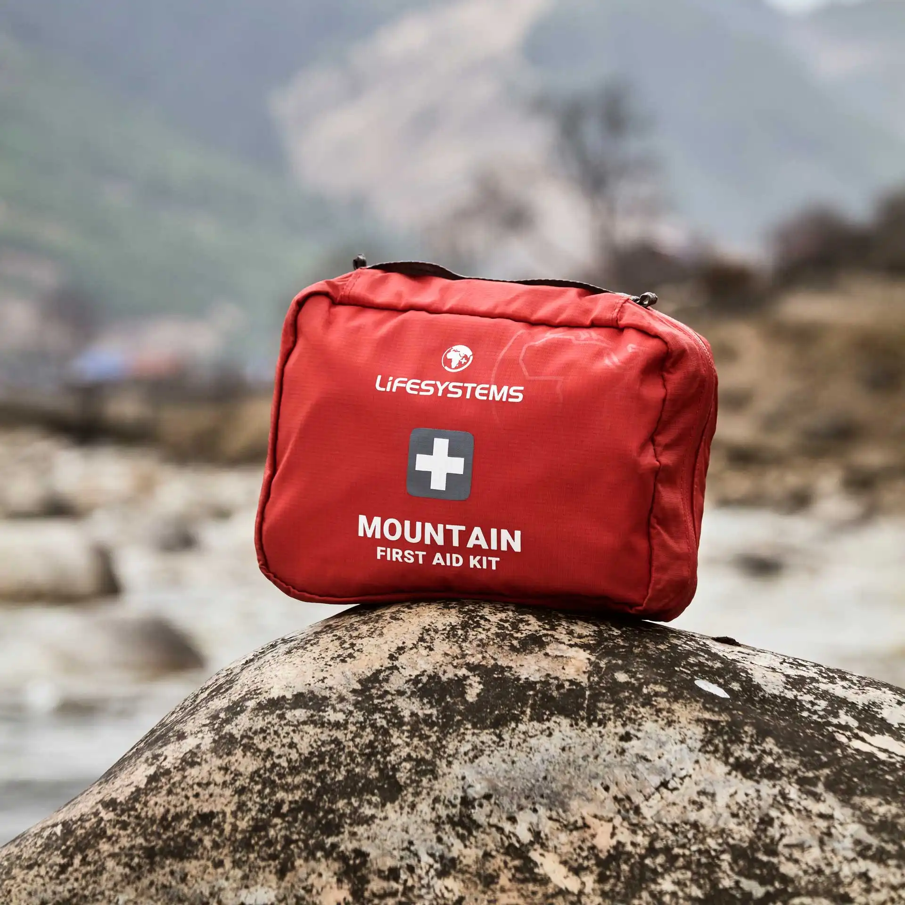

Комплект первой помощи

Аптечка должна покрывать базовые риски маршрута: обработку ран, фиксацию мелких травм, защиту от переохлаждения и контроль боли. Состав подбирается под удаленность и длительность выхода.
Важно не только носить аптечку, но и уметь быстро использовать её содержимое. В стрессовой ситуации время и последовательность действий имеют решающее значение.
Регулярно проверяйте сроки годности и комплектность. Четкая организация аптечки сокращает время на поиск нужного средства в критический момент.
Перед выходом на маршрут полезно проверить состояние снаряжения дома: крепления, швы, регулировки и совместимость элементов между собой. Такая проверка снижает вероятность технических проблем уже в горах.
Финальный выбор всегда зависит от формата маршрута, сезона и личного опыта. Лучше ориентироваться на реальные условия и постепенно накапливать комплект, который проверен именно в вашей практике.